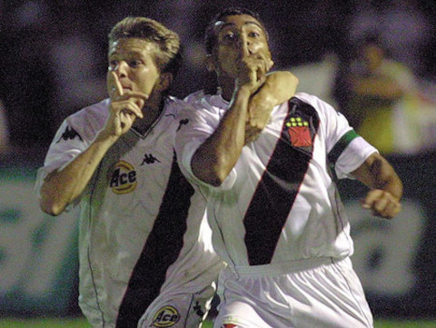

21 de agosto de 1898

O Club de Regatas Vasco da Gama foi fundado em 21 de agosto de 1898, na cidade do Rio de Janeiro, Brasil. O clube foi criado por um grupo de remadores liderado por um português chamado Almirante José Alexandre de Barros, que era entusiasta do esporte e decidiu formar um clube de regatas.
O nome "Vasco da Gama" foi escolhido em homenagem ao navegador português Vasco da Gama, que foi pioneiro na rota marítima que ligava a Europa à Índia no século XV. A escolha desse nome reflete a influência da comunidade portuguesa na fundação do clube e a admiração pela história de Vasco da Gama.
Ao longo dos anos, o Vasco da Gama expandiu suas atividades para outras modalidades esportivas, incluindo o futebol, no qual se tornou um dos clubes mais tradicionais e vitoriosos do Brasil. O clube possui uma rica história e uma base de torcedores apaixonados.
MAIORES ÍDOLOS DO VASCO
Roberto Dinamite: Um dos maiores artilheiros da história do Vasco, Roberto Dinamite é ídolo incontestável. Ele dedicou grande parte de sua carreira ao clube e é o maior artilheiro da história do Campeonato Carioca.
Gigante da Colina (Bellini): Hilderaldo Bellini, conhecido como "Gigante da Colina", foi um zagueiro fundamental na história do Vasco. Ele capitaneou a equipe na conquista da Taça Brasil de 1958, primeiro título nacional do clube.
Romário: Embora tenha jogado por vários clubes ao longo de sua carreira, Romário é lembrado com carinho pelos vascaínos. Ele foi parte integrante do time que conquistou a Copa Libertadores e a Copa do Mundo de Clubes em 1998.
Juninho Pernambucano: O meio-campista Juninho Pernambucano é um dos maiores ícones recentes do Vasco. Conhecido por seus chutes de longa distância e habilidades nas bolas paradas, ele teve passagens de sucesso pelo clube.
Ademir de Menezes: Ademir é considerado um dos maiores atacantes da história do Vasco. Ele foi artilheiro do Campeonato Carioca em várias temporadas e também fez história na seleção brasileira.